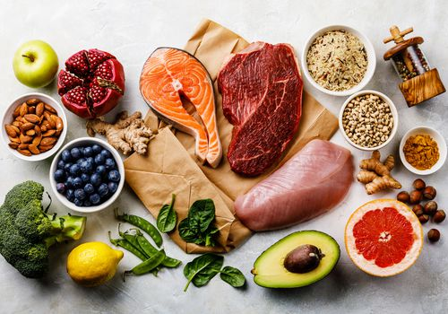

classes: Introduction to computer science Introductory Astronomy Introduction to Graphic Design Introduction to Nutrition and Dietetics Introduction to Statistics
I am undecided mainly because I change my mind a lot. It would be easy for me to just declare something but I just alwasy thought it was better to leave it open and figure it out then to commit to something I am unsure of. I have been taking a lot of introduction classes as you can see so that I can figure out what I really want to do with my life. I never want to have a job or degree I do not enjoy so I am trying to avoid just picking a major to pick. Especially since it is freshman year and I had a ton of transfer credits zi have a lot of room to explore and grow.
 Link to original Page